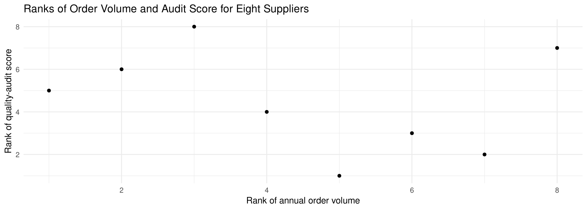

[1] 4.0 2.5 5.0 2.5 1.0Statistics
Chapter 13: Nonparametric Statistics
Yu-You Liou
Shih Chien University
2026-10-08
Overview
Chapter 13 presents nonparametric (distribution-free) methods — statistical tests that can be used when the assumption of normality cannot be met, when the data are nominal or ordinal, or when the hypothesis does not involve a population parameter.
| Section | Topics |
|---|---|
| 13-1 | Parametric vs. nonparametric tests; advantages and disadvantages; ranking and the rule for ties |
| 13-2 | Sign test for a median; Table A-10; large-sample z; paired-sample sign test |
| 13-3 | Wilcoxon rank sum test (two independent samples); R, \mu_R, \sigma_R |
Overview (continued)
| Section | Topics |
|---|---|
| 13-4 | Wilcoxon signed-rank test (two dependent samples); w_s; z formula for n > 30 |
| 13-5 | Kruskal-Wallis H test (three or more samples); chi-square approximation, \text{d.f.} = k - 1 |
| 13-6 | Spearman rank correlation r_s; runs test for randomness, G; large-sample z |
Chapter Objectives
After completing this chapter, you should be able to
- State the advantages and disadvantages of nonparametric methods.
- Test hypotheses, using the sign test.
- Test hypotheses, using the Wilcoxon rank sum test.
- Test hypotheses, using the signed-rank test.
- Test hypotheses, using the Kruskal-Wallis test.
- Compute the Spearman rank correlation coefficient.
- Test hypotheses, using the runs test.
Introduction
Statistical tests such as the z, t and F tests are called parametric tests. They are tests for population parameters such as means, variances and proportions, and they involve assumptions about the populations from which the samples were selected — one assumption being that those populations are normally distributed.
But what if the population in a particular hypothesis-testing situation is not normally distributed? Statisticians have developed a branch of statistics known as nonparametric statistics, or distribution-free statistics, for exactly that case. Nonparametric statistics can also be used to test hypotheses that do not involve specific population parameters such as \mu, \sigma or p.
Nonparametric Statistical Tests
Nonparametric statistical tests are used to test hypotheses about population parameters when the assumption about normality cannot be met.
What This Chapter Covers
A sportswriter may wish to know whether there is a relationship between the rankings of two judges on the diving abilities of 10 Olympic swimmers. A sociologist may wish to determine whether men and women enroll at random for a specific drug rehabilitation program. The statistical tests used in these situations are nonparametric, or distribution-free, tests.
The nonparametric tests explained in this chapter are the sign test, the Wilcoxon rank sum test, the Wilcoxon signed-rank test, the Kruskal-Wallis test and the runs test. In addition, the Spearman rank correlation coefficient, a statistic for determining the relationship between ranks, is explained.
Section 13-1: Advantages and Disadvantages of Nonparametric Methods
Advantages of Nonparametric Methods
Nonparametric tests and statistics can be used in place of their parametric counterparts (z, t and F) when the assumption of normality cannot be met. You should not, however, assume that these statistics are a better alternative than the parametric statistics — there are both advantages and disadvantages to their use.
Six Advantages
- They can be used to test population parameters when the variable is not normally distributed.
- They can be used when the data are nominal or ordinal.
- They can be used to test hypotheses that do not involve population parameters.
- In some cases, the computations are easier than those for the parametric counterparts.
- They are easy to understand.
- There are fewer assumptions that have to be met, and the assumptions are easier to verify.
Disadvantages of Nonparametric Methods
Three Disadvantages
- They are less sensitive than their parametric counterparts when the assumptions of the parametric methods are met. Therefore, larger differences are needed before the null hypothesis can be rejected.
- They tend to use less information than the parametric tests. For example, the sign test requires the researcher to determine only whether the data values are above or below the median, not how much above or below the median each value is.
- They are less efficient than their parametric counterparts when the assumptions of the parametric methods are met — larger sample sizes are needed to overcome the loss of information. The nonparametric sign test is about 60% as efficient as its parametric counterpart, the z test: a sample size of 100 is needed for the sign test, compared with a sample size of 60 for the z test, to obtain the same results.
Choosing Between the Two Approaches
Caution
Since there are both advantages and disadvantages to the nonparametric methods, the researcher should use caution in selecting these methods. If the parametric assumptions can be met, the parametric methods are preferred. When the parametric assumptions cannot be met, the nonparametric methods are a valuable tool for analyzing the data.
Assumptions for Nonparametric Statistics
- The sample or samples are randomly selected.
- If two or more samples are used, they must be independent of each other unless otherwise stated.
Ranking
Many nonparametric tests involve the ranking of data.
Ranking
Ranking is the positioning of a data value in a data array according to some rating scale. Ranking is an ordinal variable.
A judge rates five speakers on a scale of 1 to 10, with 1 best and 10 worst.
| Speaker | A | B | C | D | E |
|---|---|---|---|---|---|
| Rating | 8 | 6 | 10 | 3 | 1 |
Speaker E has the lowest score (1 point) and is ranked first; speaker D (3 points) is ranked second; and so on.
| Speaker | E | D | B | A | C |
|---|---|---|---|---|---|
| Rating | 1 | 3 | 6 | 8 | 10 |
| Ranking | 1 | 2 | 3 | 4 | 5 |
Ranking When There Are Ties
Suppose two or more speakers receive the same number of points:
| Speaker | A | B | C | D | E |
|---|---|---|---|---|---|
| Rating | 8 | 6 | 10 | 6 | 3 |
Rule for Tied Values
When places tie, the average of the ranks must be used. D and B tie for 2nd and 3rd, so each is ranked
\frac{2 + 3}{2} = \frac{5}{2} = 2.5
| Speaker | E | D | B | A | C |
|---|---|---|---|---|---|
| Rating | 3 | 6 | 6 | 8 | 10 |
| Ranking | 1 | 2.5 | 2.5 | 4 | 5 |
Data are often already ranked. P-values apply only to normal or chi-square tests.
Ranking in R
Prepare data — rank() ranks from lowest to highest and, by default, assigns the average of the ranks to tied values, which is exactly the rule above.
The two speakers rated 6 would have occupied ranks 2 and 3, so each receives rank 2.5.
Section 13-2: The Sign Test
The Single-Sample Sign Test
The simplest nonparametric test, the sign test for single samples, is used to test the value of a median for a specific sample.
Sign Test for a Single Sample
The sign test for a single sample is a nonparametric test used to test the value of a population median.
The researcher hypothesizes a specific value for the median of a population, then selects a random sample and compares each value with the conjectured median.
- If the data value is above the conjectured median, it is assigned a plus sign.
- If the data value is below the conjectured median, it is assigned a minus sign.
- If the data value is exactly the same as the conjectured median, it is assigned a 0.
If H_0 is true, the number of plus signs should be approximately equal to the number of minus signs. If H_0 is not true, there will be a disproportionate number of plus or minus signs.
Test Statistic for the Sign Test
Test Statistic for the Sign Test
If n \leq 25, the test statistic is the smaller number of plus or minus signs. When n > 25, the test statistic is
z = \frac{(X + 0.5) - 0.5n}{\sqrt{n} / 2}
where X is the smaller number of plus or minus signs and n is the total number of plus or minus signs.
- When n \leq 25, Table A-10 gives the critical value. For a specific \alpha, if the test statistic is less than or equal to the critical value, reject H_0. The values in Table A-10 come from the binomial distribution with p = 0.5.
- When n > 25, the normal approximation with Table A-4 is used. Here \mu = np = 0.5n and \sigma = \sqrt{npq} = \sqrt{n(0.5)(0.5)} = \sqrt{n}/2, since p = q = 0.5.
Procedure Table: Performing the Sign Test
Five Steps
Step 1. State the hypotheses and identify the claim.
Step 2. Find the critical value. Use Table A-10 when n \leq 25 and Table A-4 when n > 25.
Step 3. Compute the test statistic.
Step 4. Make the decision.
Step 5. Summarize the results.
Example 13-1
Daily Drink Orders at a Night Market Stall
The owner of a bubble-tea stall in a Taipei night market claims that the median number of drink orders the stall fills per day is 45. To test the claim, an intern randomly selects 20 business days and records the number of orders filled each day (hypothetical data). At \alpha = 0.05, test the claim that the median number of orders filled per day is 45.
52 48 51 50 70
47 39 53 60 37
27 46 54 49 51
45 58 46 45 47Example 13-1
Solution
Step 1. State the hypotheses and identify the claim.
H_0: Median = 45 (claim); H_1: Median \neq 45.
Step 2. Find the critical value. Subtract the hypothesized median, 45, from each data value: a value above 45 is assigned a +, a value below 45 a -, and a value equal to 45 a 0. For example, 52 - 45 = +7 so 52 gets a +; 27 - 45 = -18 so 27 gets a -; 45 - 45 = 0 so 45 gets a 0.
+ + + + +
+ - + + -
- + + + +
0 + + 0 +Since n \leq 25, use Table A-10. Here n = 20 - 2 = 18 (there are two zeros) and \alpha = 0.05; the critical value for a two-tailed test is 4.
Example 13-1
Example 13-1
Solution
Step 4. Make the decision. Compare the test statistic 3 with the critical value 4. If the test statistic is less than or equal to the critical value, reject H_0. Here 3 < 4, so reject the null hypothesis.
Step 5. Summarize the results. There is enough evidence to reject the claim that the median number of drink orders filled per day is 45.
P-value. The critical values in Table A-10 come from the binomial distribution with p = 0.5, so the exact P-value is a binomial probability.
P = 0.0075 < 0.05, which agrees with the traditional decision to reject H_0.
Example 13-2
Daily Parcels Leaving a Fulfilment Centre
A logistics analyst hypothesizes that the median number of parcels shipped per day from a cross-border e-commerce fulfilment centre in Taoyuan is 500. A random sample of 40 days is selected, and on 15 of those days fewer than 500 parcels were shipped (hypothetical data). At \alpha = 0.05, test the claim that the median number of parcels shipped per day is 500.
Back to Example 13-3
Example 13-2
Solution
Step 1. State the hypotheses and identify the claim.
H_0: Median = 500 (claim); H_1: Median \neq 500.
Step 2. Find the critical values. Since \alpha = 0.05, n = 40 and the test is two-tailed, the critical values from Table A-4 are +1.96 and -1.96.
Step 3. Compute the test statistic. On 15 days the count was below 500, so on 40 - 15 = 25 days it was 500 or above. X is the smaller of 15 and 25, so X = 15.
z = \frac{(X + 0.5) - 0.5n}{\sqrt{n}/2} = \frac{(15 + 0.5) - 0.5(40)}{\sqrt{40}/2} = -1.42
Example 13-2
Solution
Step 3 in R
[1] -1.423025[1] -1.959964 1.959964Step 4. Make the decision. Since the test statistic -1.42 is greater than -1.96, the decision is to not reject the null hypothesis.
Step 5. Summarize the results. There is not enough evidence to reject the claim that the median number of parcels shipped per day is 500.
Which Count Is X?
Suppose a researcher hypothesized that the median age of houses in a municipality was 40 years, and in a random sample of 100 houses 68 were older than 40 years. There would be 68 positive signs and 32 negative signs, so X = 32 — the smaller of the two values.
Caution
Because the sign test uses the smaller number of plus or minus signs, the test is either a two-tailed test or a left-tailed test. When the test is two-tailed, the critical value is found on the left side of the standard normal distribution. When the sign test is a right-tailed test, the formula becomes
z = \frac{(X - 0.5) - 0.5n}{\sqrt{n}/2}
and the larger number of plus or minus signs is used for X. The hypotheses are then H_0: Median = k and H_1: Median > k, and the right side of the z distribution supplies the critical value.
The Paired-Sample Sign Test
The sign test can also compare two dependent samples, such as a before-and-after test. Use the t test (Section 9-4) when the populations are normal; when normality cannot be met, use the nonparametric sign test.
Paired-Sample Sign Test
The paired-sample sign test is a nonparametric test that is used to test the difference between two population medians when the samples are dependent.
X_B is the value before the treatment and X_A the value after. Form the differences X_B - X_A and give each a plus or minus sign; zeros are ignored. The test can be left-tailed, right-tailed or two-tailed, and the procedure is the same as for the single-sample sign test.
Two Assumptions for the Paired-Sample Sign Test
- The sample is random.
- The variables are dependent or paired.
Example 13-3
Mis-picked Items Before and After a New Picking System
A warehouse manager believed that the number of mis-picked items per shift can be reduced if a pick-to-light system replaces paper pick lists. Ten pickers were selected, and the number of mis-picked items was recorded for one shift before the system was installed and for one shift after it was installed (hypothetical data). At \alpha = 0.05, can the manager conclude that the new system reduced the number of mis-picked items?
| Picker | Before, X_B | After, X_A |
|---|---|---|
| A | 6 | 4 |
| B | 2 | 3 |
| C | 7 | 5 |
| D | 5 | 1 |
| E | 4 | 2 |
| F | 6 | 3 |
| G | 3 | 1 |
| H | 8 | 5 |
| I | 4 | 4 |
| J | 2 | 5 |
Example 13-3
Solution
Step 1. State the hypotheses and identify the claim.
H_0: The number of mis-picked items will not be reduced.
H_1: The number of mis-picked items will be reduced (claim).
Step 2. Find the critical value. Subtract the after values X_A from the before values X_B and record the sign of each difference.
| Picker | A | B | C | D | E | F | G | H | I | J |
|---|---|---|---|---|---|---|---|---|---|---|
| Sign of difference | + | - | + | + | + | + | + | + | 0 | - |
From Table A-10, with n = 9 (the total number of positive and negative signs; the 0 is not counted) and \alpha = 0.05 one-tailed, at most 1 negative sign is needed to reject H_0, because 1 is the smallest entry in the \alpha = 0.05 column.
Example 13-3
Solution
Step 3 in R — since n \leq 25, the test statistic is the smaller of the two sign counts.
[1] 7[1] 2Step 4. Make the decision. Compare the test statistic 2 with the critical value 1. Here 2 > 1, so the decision is to not reject H_0.
Step 5. Summarize the results. There is not enough evidence to support the claim that the pick-to-light system reduced the number of mis-picked items.
Reasoning Before Testing
Caution
When conducting a one-tailed sign test, the researcher must scrutinize the data to determine whether they support the null hypothesis. If they do, there is no need to conduct the test.
In Example 13-3, H_0 states that the number of mis-picked items will not be reduced. The data would support H_0 if there were more negative signs than positive signs, because then the before values X_B would mostly be smaller than the after values X_A. The researcher would stop there. Since the positive signs dominate in Example 13-3, the procedure was continued.
When the sample size is 26 or more, the normal approximation is used in the same manner as in Example 13-2.
Section 13-3: The Wilcoxon Rank Sum Test
Why Ranks?
The sign test does not consider the magnitude of the data: whether a value is 1 point or 100 points below the median, it receives a negative sign. The Wilcoxon tests consider differences in magnitudes by using ranks.
The two tests are the Wilcoxon rank sum test, used for independent samples (this section), and the Wilcoxon signed-rank test, used for dependent samples (Section 13-4). Both are used to compare distributions. The parametric equivalents are the z and t tests for independent samples and the t test for dependent samples.
Wilcoxon Rank Sum Test
The Wilcoxon rank sum test, sometimes called the Mann-Whitney test, is a nonparametric test that uses ranks to determine if two independent samples were selected from populations that have the same distributions.
In this test the values of the data for both samples are combined and then ranked. If H_0 is true, the values in each sample should be ranked approximately the same, so the rank sums should be approximately equal. A large difference in the sums of the ranks means the distributions are not identical and H_0 is rejected.
Assumptions and Formulas
Assumptions for the Wilcoxon Rank Sum Test
- The samples are random and independent of one another.
- The size of each sample must be greater than or equal to 10.
Formula for the Wilcoxon Rank Sum Test When Samples Are Independent
z = \frac{R - \mu_R}{\sigma_R} \qquad \text{where} \qquad \mu_R = \frac{n_1(n_1 + n_2 + 1)}{2}, \qquad \sigma_R = \sqrt{\frac{n_1 n_2 (n_1 + n_2 + 1)}{12}}
- R = sum of ranks for the smaller sample size (n_1)
- n_1 = smaller of the sample sizes, n_2 = larger of the sample sizes
- n_1 \geq 10 and n_2 \geq 10
If both samples are the same size, either size can be used as n_1. Table A-4 is used for the critical values.
Procedure Table: Wilcoxon Rank Sum Test
Five Steps
Step 1. State the hypotheses and identify the claim.
Step 2. Find the critical value(s). Use Table A-4.
Step 3. Compute the test statistic.
a. Combine the data from the two samples, arrange the combined data in order, and rank each value.
b. Sum the ranks of the group with the smaller sample size. (If both groups have the same sample size, either one can be used.)
c. Use the formulas for \mu_R, \sigma_R and z.
Step 4. Make the decision.
Step 5. Summarize the results.
Example 13-4
Order-Picking Times at Two Distribution Centres
An operations team draws two independent random samples of order lines, one from the company’s Kaohsiung distribution centre and one from its Taoyuan distribution centre, and records the time in seconds needed to pick each line (hypothetical data). At \alpha = 0.05, is there a difference in the picking times at the two centres?
Kaohsiung 58 60 63 72 74 76 78 88 92 96 125
Taoyuan 69 79 84 88 93 99 106 112 120 131 140 152Example 13-4
Solution
Step 1. State the hypotheses and identify the claim.
H_0: There is no difference in the picking times at the two distribution centres.
H_1: There is a difference in the picking times at the two distribution centres (claim).
Step 2. Find the critical values. Since \alpha = 0.05 and the test is two-tailed, the critical values from Table A-4 are +1.96 and -1.96.
Step 3a. Combine the data, arrange in ascending order, and rank each value (K = Kaohsiung, T = Taoyuan).
| Time | 58 | 60 | 63 | 69 | 72 | 74 | 76 | 78 | 79 | 84 | 88 | 88 |
|---|---|---|---|---|---|---|---|---|---|---|---|---|
| Centre | K | K | K | T | K | K | K | K | T | T | K | T |
| Rank | 1 | 2 | 3 | 4 | 5 | 6 | 7 | 8 | 9 | 10 | 11.5 | 11.5 |
| Time | 92 | 93 | 96 | 99 | 106 | 112 | 120 | 125 | 131 | 140 | 152 |
|---|---|---|---|---|---|---|---|---|---|---|---|
| Centre | K | T | K | T | T | T | T | K | T | T | T |
| Rank | 13 | 14 | 15 | 16 | 17 | 18 | 19 | 20 | 21 | 22 | 23 |
Example 13-4
Solution
Step 3b. Kaohsiung has the smaller sample size, so sum its ranks.
R = 1 + 2 + 3 + 5 + 6 + 7 + 8 + 11.5 + 13 + 15 + 20 = 91.5
Step 3c. Substitute in the formulas, with n_1 = 11 and n_2 = 12.
\mu_R = \frac{11(11 + 12 + 1)}{2} = 132 \qquad \sigma_R = \sqrt{\frac{(11)(12)(11 + 12 + 1)}{12}} = \sqrt{264} = 16.248
z = \frac{R - \mu_R}{\sigma_R} = \frac{91.5 - 132}{16.248} = -2.493
Example 13-4
Solution
Step 3 in R — rank() reproduces the ranking above, including the averaged ranks for the tied value 88.
[1] 1.0 2.0 3.0 5.0 6.0 7.0 8.0 11.5 13.0 15.0 20.0 4.0 9.0 10.0 11.5
[16] 14.0 16.0 17.0 18.0 19.0 21.0 22.0 23.0[1] 91.5[1] -2.492603Example 13-4
Solution
Step 4. Make the decision. The decision is to reject the null hypothesis, since -2.493 < -1.96.
Step 5. Summarize the results. There is enough evidence to support the claim that there is a difference in the picking times at the two distribution centres.
P-value. The test is two-tailed, so the P-value is twice the area to the left of z = -2.493.
Since P = 0.0127 < 0.05, H_0 is rejected, which agrees with the traditional decision.
The Rank Sum Test in R
R’s wilcox.test() reports the Mann-Whitney U statistic rather than the rank sum R. The two statistics carry the same information: U = R - \dfrac{n_1(n_1+1)}{2} = 91.5 - 66 = 25.5.
Wilcoxon rank sum test with continuity correction
data: kaohsiung and taoyuan
W = 25.5, p-value = 0.0138
alternative hypothesis: true location shift is not equal to 0Caution
The hand computation taught here uses the plain normal approximation, with neither a tie correction nor a continuity correction, and gives P = 0.0127. wilcox.test() applies a continuity correction by default and reports P = 0.0138. Both P-values are far below \alpha = 0.05, so the decision is unchanged.
Section 13-4: The Wilcoxon Signed-Rank Test
The Wilcoxon Signed-Rank Test
When the samples are dependent, as they would be in a before-and-after test using the same subjects, the Wilcoxon signed-rank test can be used in place of the t test for dependent samples. Again, this test does not require the condition of normality.
Wilcoxon Signed-Rank Test
The Wilcoxon signed-rank test is a nonparametric test used to test whether two dependent samples have been selected from two populations having the same distributions.
Assumptions for the Wilcoxon Signed-Rank Test
- The paired data have been obtained from a random sample.
- The population of differences has a distribution that is approximately symmetric.
The Test Statistic w_s
To find the test statistic for the Wilcoxon signed-rank test, denoted by w_s, when n \leq 30:
- rank the absolute values of the differences of each pair of data values;
- assign either a + or a - sign to each rank according to the original sign of the difference;
- sum the positive ranks and the negative ranks separately;
- select the smaller of the absolute values of the two sums as the test statistic w_s.
Table A-11 is used for the critical values when n \leq 30: use the column for the critical value along with the row for the value of n.
The Test Statistic w_s
Large Samples: n > 30
When n > 30, the normal distribution approximates the Wilcoxon distribution and the same critical values from Table A-4 are used:
z = \frac{w_s - \dfrac{n(n+1)}{4}}{\sqrt{\dfrac{n(n+1)(2n+1)}{24}}}
where n = number of pairs where the difference is not 0, and w_s = smaller sum in absolute value of the signed ranks.
Procedure Table: Wilcoxon Signed-Rank Test
Five Steps
Step 1. State the hypotheses and identify the claim.
Step 2. Find the critical value from Table A-11 when n \leq 30 and from Table A-4 when n > 30.
Step 3. Compute the test statistic. When n \leq 30: (a) make a table with columns X_B, X_A, D = X_B - X_A, |D|, Rank and Signed rank; (b) find the differences; (c) find the absolute value of each difference; (d) rank each absolute value from lowest to highest; (e) give each rank the sign of its difference; (f) find the sum of the positive ranks and the sum of the negative ranks separately; (g) select the smaller of the absolute values of the sums as w_s. When n > 30, use the z formula and Table A-4.
Step 4. Make the decision. Reject H_0 if the test statistic is less than or equal to the critical value.
Step 5. Summarize the results.
Example 13-5
Complaints Before and After a New Self-Service Menu
The manager of a customer service centre wishes to see whether the number of escalated complaints per day will change after a new self-service menu is added to the hotline. The number of escalated complaints is recorded for 7 days before the menu is added and for the matching 7 days of the following week (hypothetical data). Is there enough evidence to support the claim, at \alpha = 0.05, that there is a difference in the number of escalated complaints before and after the change?
| Day | Before | After |
|---|---|---|
| Monday | 9 | 7 |
| Tuesday | 4 | 5 |
| Wednesday | 5 | 6 |
| Thursday | 8 | 5 |
| Friday | 7 | 3 |
| Saturday | 10 | 8 |
| Sunday | 14 | 6 |
Example 13-5
Solution
Step 1. State the hypotheses and identify the claim.
H_0: There is no difference in escalated complaints before and after the change.
H_1: There is a difference in escalated complaints before and after the change (claim).
Step 2. Because n \leq 30, use Table A-11: with n = 7 and \alpha = 0.05 (two-tailed) the critical value is 2.
Step 3. Build the table of differences D = X_B - X_A, their absolute values, ranks and signed ranks.
| Day | Before, X_B | After, X_A | D | \lvert D \rvert | Rank | Signed rank |
|---|---|---|---|---|---|---|
| Mon. | 9 | 7 | 2 | 2 | 3.5 | +3.5 |
| Tues. | 4 | 5 | -1 | 1 | 1.5 | -1.5 |
| Wed. | 5 | 6 | -1 | 1 | 1.5 | -1.5 |
| Thurs. | 8 | 5 | 3 | 3 | 5 | +5 |
| Fri. | 7 | 3 | 4 | 4 | 6 | +6 |
| Sat. | 10 | 8 | 2 | 2 | 3.5 | +3.5 |
| Sun. | 14 | 6 | 8 | 8 | 7 | +7 |
Example 13-5
Solution
Step 3 (f) and (g). Sum the positive and negative ranks separately and take the smaller absolute value.
\text{Positive rank sum} = (+3.5) + (+5) + (+6) + (+3.5) + (+7) = +25
\text{Negative rank sum} = (-1.5) + (-1.5) = -3 \qquad \Rightarrow \qquad w_s = \lvert -3 \rvert = 3
[1] 3.5 -1.5 -1.5 5.0 6.0 3.5 7.0[1] 25[1] -3Example 13-5
Solution
Step 4. Make the decision. Reject H_0 if the test statistic is less than or equal to the critical value. In this case 3 > 2, so the decision is to not reject the null hypothesis.
Step 5. Summarize the results. There is not enough evidence at \alpha = 0.05 to support the claim that there is a difference in the number of escalated complaints before and after the change. Hence, the new self-service menu probably made no difference to the number of escalated complaints.
Wilcoxon signed rank test with continuity correction
data: complaints_before and complaints_after
V = 25, p-value = 0.07488
alternative hypothesis: true location shift is not equal to 0R reports V = 25, the sum of the positive ranks, whereas w_s = 3 is the smaller of the two sums. The P-value, 0.0749 > 0.05, leads to the same decision.
Rationale for the Signed-Rank Test
Think of a diet study. If the diet is working, most of the postweights will be smaller than the preweights. When the postweights are subtracted from the preweights, most of the signs will be positive, and the absolute value of the sum of the negative ranks will be small — probably smaller than the critical value from Table A-11 — and H_0 will be rejected.
If the diet does not work, some people will gain weight, others will lose weight, and still others will stay about the same. The sum of the positive ranks and the absolute value of the sum of the negative ranks will then be approximately equal, each about one-half of the sum of all the ranks. The smaller of the two absolute values will still be larger than the critical value, and H_0 will not be rejected.
Section 13-5: The Kruskal-Wallis Test
The Kruskal-Wallis Test
The analysis of variance uses the F test to compare the means of three or more populations. The assumptions for the ANOVA test are that the populations are normally distributed and that the population variances are equal. When these assumptions cannot be met, the nonparametric Kruskal-Wallis test, sometimes called the H test, can be used to compare three or more means.
Kruskal-Wallis Test
The Kruskal-Wallis test is a nonparametric test that is used to determine whether three or more samples came from populations with the same distributions.
Assumptions for the Kruskal-Wallis Test
- There are at least three random samples.
- The size of each sample must be at least 5.
When each sample size is 5 or more, the distribution can be approximated by the chi-square distribution with \text{d.f.} = k - 1, where k is the number of groups.
The H Statistic
In the Kruskal-Wallis test, all the data values are considered as one group and ranked. The ranks are then separated and the H formula, which approximates the variance of the ranks, is computed. If the samples come from different populations, the sums of the ranks will differ and H will be large, so H_0 is rejected. If they come from the same population, the rank sums will be about the same and H will be small. This test is always a right-tailed test, and Table A-6 (chi-square) with \text{d.f.} = k - 1 supplies the critical value.
Formula for the Kruskal-Wallis Test
H = \frac{12}{N(N+1)}\left(\frac{R_1^2}{n_1} + \frac{R_2^2}{n_2} + \cdots + \frac{R_k^2}{n_k}\right) - 3(N+1)
where R_i = sum of ranks of sample i, n_i = size of sample i, N = n_1 + n_2 + \cdots + n_k and k = number of samples.
Since the test is right-tailed, H_0 is rejected if the test statistic is greater than or equal to the critical value.
Procedure Table: Kruskal-Wallis Test
Five Steps
Step 1. State the hypotheses and identify the claim.
Step 2. Find the critical value. Use the chi-square table, Table A-6, with \text{d.f.} = k - 1 (k = number of groups).
Step 3. Compute the test statistic. (a) Arrange the data from lowest to highest and rank each value. (b) Find the sum of the ranks of each group. (c) Substitute in the H formula.
Step 4. Make the decision.
Step 5. Summarize the results.
Example 13-6
Transit Times of Three Air Freight Carriers
A trade compliance team compares three air freight carriers on the Taipei-Tokyo lane. Five shipments are selected at random from each carrier and the door-to-door transit time, in hours, is recorded (hypothetical data). At \alpha = 0.05, is there enough evidence to claim that the transit times differ among the three carriers?
Carrier A Carrier B Carrier C
38.9 28.6 25.4
42.8 31.2 27.1
44.1 34.0 29.8
46.5 37.6 32.5
49.3 41.2 35.3Example 13-6
Solution
Step 1. State the hypotheses and identify the claim.
H_0: There is no difference in the transit times of the three carriers.
H_1: There is a difference in the transit times of the three carriers (claim).
Step 2. Find the critical value. Use Table A-6 with \text{d.f.} = k - 1 = 3 - 1 = 2 and \alpha = 0.05; the critical value is 5.991.
Step 3a. Arrange all the data from lowest to highest and rank each value.
| Hours | 25.4 | 27.1 | 28.6 | 29.8 | 31.2 | 32.5 | 34.0 | 35.3 |
|---|---|---|---|---|---|---|---|---|
| Carrier | C | C | B | C | B | C | B | C |
| Rank | 1 | 2 | 3 | 4 | 5 | 6 | 7 | 8 |
| Hours | 37.6 | 38.9 | 41.2 | 42.8 | 44.1 | 46.5 | 49.3 |
|---|---|---|---|---|---|---|---|
| Carrier | B | A | B | A | A | A | A |
| Rank | 9 | 10 | 11 | 12 | 13 | 14 | 15 |
Example 13-6
Solution
Step 3b. Find the sum of the ranks for each carrier.
R_1 = 10 + 12 + 13 + 14 + 15 = 64 \qquad R_2 = 3 + 5 + 7 + 9 + 11 = 35
R_3 = 1 + 2 + 4 + 6 + 8 = 21
Step 3c. Substitute in the formula, with N = 15 and n_1 = n_2 = n_3 = 5.
H = \frac{12}{15(15+1)}\left(\frac{64^2}{5} + \frac{35^2}{5} + \frac{21^2}{5}\right) - 3(15+1) = 9.62
Step 4. Make the decision. Since the test statistic 9.62 is greater than 5.991, reject the null hypothesis.
Step 5. Summarize the results. There is enough evidence to support the claim that the transit times differ among the three carriers.
Example 13-6
Solution
Step 3 in R — kruskal.test() ranks the pooled data and returns H directly.
Kruskal-Wallis rank sum test
data: transit_hours by carrier
Kruskal-Wallis chi-squared = 9.62, df = 2, p-value = 0.008148The critical value is qchisq(0.95, df = 2) = 5.991 and the P-value is 0.0081.
Example 13-6
Solution
The H formula by hand. The formula on the procedure slide can be computed directly from the rank sums and checked against the built-in test.
[1] 64[1] 35[1] 21[1] 9.62There are no tied transit times, so the hand formula and kruskal.test() agree exactly.
Section 13-6: The Spearman Rank Correlation Coefficient and the Runs Test
The Spearman Rank Correlation Coefficient
Chapter 10’s Pearson correlation coefficient (-1 to +1) tests whether two variables are linearly related, assuming normally distributed populations. When they are not, use the nonparametric equivalent for ranked data.
Spearman Rank Correlation Coefficient
The Spearman rank correlation coefficient, denoted by r_s, is a nonparametric statistic that uses ranks to determine if there is a relationship between two variables.
Instead, rank each data set and compute r_s from the rank differences.
- If both sets of data have the same ranks, r_s = +1.
- If the sets are ranked in exactly the opposite way, r_s = -1.
- If there is no relationship between the rankings, r_s will be near 0.
Formula and Hypotheses
Assumptions for Spearman’s Rank Correlation Coefficient
- The sample is a random sample.
- The data consist of two measurements or observations taken on the same individual.
Formula for Computing the Spearman Rank Correlation Coefficient
r_s = 1 - \frac{6 \sum d^2}{n(n^2 - 1)}
where d = difference in ranks and n = number of data pairs.
Use it when the ranks have no ties; otherwise apply the Chapter 10 Pearson formula to the ranks:
r = \frac{n\sum xy - (\sum x)(\sum y)}{\sqrt{\left[n\sum x^2 - (\sum x)^2\right]\left[n\sum y^2 - (\sum y)^2\right]}}
Table A-12 gives critical values for n \leq 30; for larger n use the normal distribution. All tests here are two-tailed: H_0: \rho = 0 vs. H_1: \rho \neq 0.
Procedure Table: Finding and Testing r_s
Five Steps
Step 1. State the hypotheses.
Step 2. Find the critical values.
Step 3. Find the test statistic. (a) Rank the values in each data set. (b) Subtract the rankings for each pair of data values (X_1 - X_2). (c) Square the differences. (d) Find the sum of the squares. (e) Substitute in the formula r_s = 1 - \dfrac{6\sum d^2}{n(n^2-1)}.
Step 4. Make the decision.
Step 5. Summarize the results.
Example 13-7
Order Volume and Quality-Audit Score of Suppliers
A sourcing manager wishes to see whether the annual order volume a supplier receives is related to the supplier’s quality-audit score. Eight suppliers are selected, and the annual order volume (in thousands of units) and the audit score (out of 100) are recorded (hypothetical data). At \alpha = 0.05, is there a significant linear relationship between the order volume and the audit score?
Supplier Order volume Audit score
A 24 81
B 52 72
C 45 61
D 31 93
E 18 78
F 37 75
G 76 88
H 68 68Example 13-7
Solution
Step 1. State the hypotheses: H_0: \rho = 0 and H_1: \rho \neq 0.
Step 2. Find the critical value. Use Table A-12 with n = 8 and \alpha = 0.05; it is \pm 0.738.
Step 3a and 3b. Rank each data set, then subtract the rankings. Let X_1 be the rank of the order volumes and X_2 the rank of the audit scores.
| Supplier | Order volume | X_1 | Audit score | X_2 | d = X_1 - X_2 | d^2 |
|---|---|---|---|---|---|---|
| A | 24 | 2 | 81 | 6 | -4 | 16 |
| B | 52 | 6 | 72 | 3 | 3 | 9 |
| C | 45 | 5 | 61 | 1 | 4 | 16 |
| D | 31 | 3 | 93 | 8 | -5 | 25 |
| E | 18 | 1 | 78 | 5 | -4 | 16 |
| F | 37 | 4 | 75 | 4 | 0 | 0 |
| G | 76 | 8 | 88 | 7 | 1 | 1 |
| H | 68 | 7 | 68 | 2 | 5 | 25 |
Example 13-7
Solution
Step 3c to 3e. Square the differences, sum the squares, and substitute in the formula.
\sum d^2 = 16 + 9 + 16 + 25 + 16 + 0 + 1 + 25 = 108
r_s = 1 - \frac{6 \sum d^2}{n(n^2 - 1)} = 1 - \frac{6(108)}{8(8^2 - 1)} = 1 - \frac{648}{504} = -0.286
Example 13-7
Solution
Step 4. Make the decision. Do not reject the null hypothesis, since -0.286 > -0.738.
Step 5. Summarize the results. There is not enough evidence to say there is a linear relationship between a supplier’s order volume and its quality-audit score.
Spearman Rank Correlation in R
Prepare data — plotting the ranks against each other shows why r_s is close to zero: the points show no consistent upward or downward pattern. The data entered in Example 13-7 are reused here.
Spearman Rank Correlation in R
Output figure

The Runs Test
When samples are selected, you assume that they are selected at random. How do you know if the data obtained from a sample are truly random? One way to answer this question is to use the runs test. Before you can use it, you must be able to determine the number of runs in a sequence of events.
Run
A run is a succession of identical letters preceded or followed by a different letter or no letter at all, such as the beginning or end of the succession.
Counting the Runs in a Sequence
Consider a researcher interviewing 20 people for a survey, with gender denoted M and F.
Situation 1 M M M M M M M M M M F F F F F F F F F F
Situation 2 F M F M F M F M F M F M F M F M F M F M
Situation 3 F F F M M F M F M M F F M M F F M M M FSituation 1 does not look random — 10 males were selected first, then 10 females; it has only 2 runs. Situation 2 does not look random either — the researcher seems to alternate; it has 20 runs, each letter forming its own run. Situation 3 looks as if it may be random; it has 11 runs. Here n_1 = 10 and n_2 = 10 in all three situations, and G denotes the number of runs.
Example 13-8
Number of Runs
Determine the number of runs and the values of n_1 and n_2 in each sequence.
a. D D D X X D D X (D = domestic order, X = export order)
b. L L E L E E E E L L (E = early shift, L = late shift)
c. C C P P C P P P C C P (C = cash, P = card)Back to Example 13-9
Example 13-8
Solution
a. There are four runs: DDD | XX | DD | X. There are five D’s and three X’s, so n_1 = 5 and n_2 = 3.
b. There are five runs: LL | E | L | EEEE | LL. There are five E’s and five L’s, so n_1 = 5 and n_2 = 5.
c. There are six runs: CC | PP | C | PPP | CC | P. There are five C’s and six P’s, so n_1 = 5 and n_2 = 6.
In R, rle() lists the length of every run, and length() counts them.
The Runs Test for Randomness
Runs Test for Randomness
The runs test for randomness is a nonparametric test that is used to determine if a sequence of data values occurs at random.
The test considers the number of runs rather than the frequency of the letters: for data to be selected at random, there should be neither too few nor too many runs. The runs test does not consider how many of each category were selected or how many of each are in a specific run.
When the data are numerical, use the median to determine the number of runs: find the median, then assign the letter A to each value above the median and B to each value below the median. Ignore any data values that are equal to the median.
Assumptions for the Runs Test for Randomness
- The data from the sample are arranged in the order in which they were selected.
- Each letter, number or event can be classified into one of two mutually exclusive categories.
Test Statistic and Critical Values
Formulas for the Test Statistic Value for the Runs Test
When n_1 \leq 20 and n_2 \leq 20, use the number of runs, denoted by G, as the test statistic value. When n_1 > 20 or n_2 > 20, use
z = \frac{G - \mu_G}{\sigma_G} \qquad \text{where} \qquad \mu_G = \frac{2 n_1 n_2}{n_1 + n_2} + 1, \qquad \sigma_G = \sqrt{\frac{2 n_1 n_2 (2 n_1 n_2 - n_1 - n_2)}{(n_1 + n_2)^2 (n_1 + n_2 - 1)}}
Table A-13 gives the critical values when n_1 \leq 20 and n_2 \leq 20; its values are for a two-tailed test with \alpha = 0.05. For a sample of 12 males and 8 females, for example, any number of runs from 7 to 15 would be considered random; 6 or fewer, or 16 or more, means the sample is probably not random and H_0 should be rejected. The critical values are 6 and 16.
Procedure Table: The Runs Test
Five Steps
Step 1. State the hypotheses and identify the claim.
Step 2. Find the critical values. Use Table A-13 when n_1 \leq 20 and n_2 \leq 20; use Table A-4 when n_1 > 20 or n_2 > 20.
Step 3. Find the test statistic. Use the number of runs G if n_1 \leq 20 and n_2 \leq 20; otherwise use z = \dfrac{G - \mu_G}{\sigma_G}.
Step 4. Make the decision.
Step 5. Summarize the results.
Example 13-9
Domestic and Export Orders
A coordinator at a trading company wishes to see whether domestic and export orders arrive at random during a shift. She records the first 25 orders of the morning, where D denotes a domestic order and E an export order (hypothetical data). Test for randomness at \alpha = 0.05.
D D D E E D D D D E D E E E D D D D E E D D D E EExample 13-9
Solution
Step 1. State the hypotheses and identify the claim.
H_0: The orders arrive at random, according to type (claim).
H_1: The orders do not arrive at random, according to type.
Step 2. Determine the critical values. There are 10 E’s and 15 D’s, so n_1 = 10 and n_2 = 15. Using Table A-13 and \alpha = 0.05, the critical values are 7 and 18: reject H_0 if G \leq 7 or G \geq 18.
Step 3. Find the test statistic by arranging the letters into runs.
| Run | 1 | 2 | 3 | 4 | 5 | 6 | 7 | 8 | 9 | 10 |
|---|---|---|---|---|---|---|---|---|---|---|
| Type | DDD | EE | DDDD | E | D | EEE | DDDD | EE | DDD | EE |
There are 10 runs.
Example 13-9
Solution
Step 3 in R — count the runs with rle() as in Example 13-8.
order_types
D E
15 10 [1] 10Step 4. Make the decision. Since the number of runs is 10, and 10 is neither less than or equal to 7 nor greater than or equal to 18, do not reject the null hypothesis.
Step 5. Summarize the results. There is not enough evidence to reject the hypothesis that the orders arrive at random according to type.
Example 13-10
Cartons Shipped per Day
A supervisor records the number of cartons shipped per day at a small e-commerce warehouse for 20 consecutive business days (hypothetical data). Test the claim that the daily carton counts, in the order the days occurred, occur at random, at \alpha = 0.05.
48, 74, 45, 52, 57, 86, 54, 62, 62, 78,
41, 84, 76, 68, 66, 88, 92, 45, 50, 55Example 13-10
Solution
Step 1. State the hypotheses and identify the claim.
H_0: The numbers of cartons shipped, in the order the days occurred, occur at random (claim).
H_1: The numbers of cartons shipped, in the order the days occurred, do not occur at random.
Step 2. Find the critical values. Arrange the data in ascending order:
41 45 45 48 50 52 54 55 57 62 62 66 68 74 76 78 84 86 88 92The median is 62. Replace each number in the original sequence with an A if it is above the median and a B if it is below; eliminate any number equal to the median. The sequence of letters is
B A B B B A B A B A A A A A A B B BThere are 9 A’s and 9 B’s. Table A-13 shows that with n_1 = 9, n_2 = 9 and \alpha = 0.05, the number of runs should be 5 or less or 15 or greater to reject H_0.
Example 13-10
Solution
Step 3. Determine the number of runs from the sequence of letters.
| Run | 1 | 2 | 3 | 4 | 5 | 6 | 7 | 8 | 9 |
|---|---|---|---|---|---|---|---|---|---|
| Letters | B | A | BBB | A | B | A | B | AAAAAA | BBB |
The number of runs is G = 9.
[1] 62 [1] "B" "A" "B" "B" "B" "A" "B" "A" "B" "A" "A" "A" "A" "A" "A" "B" "B" "B"above_below
A B
9 9 [1] 9Example 13-10
Solution
Step 4. Make the decision. Since there are 9 runs and 9 falls between the critical values 5 and 15, the null hypothesis is not rejected.
Step 5. Summarize the results. There is not enough evidence to reject the hypothesis that the numbers of cartons shipped occur at random.
Example 13-11
Destination Region of Export Bookings
A freight forwarder in Taipei records the destination region of 45 consecutive export bookings, where A denotes Asia and N denotes North America (hypothetical data). At \alpha = 0.05, can it be concluded that the sequence of destinations is random?
A A A A N N N N N A A A A A N A A A N A N A A A
N N A A N A N N N N A N A A A A A N N N NHere n_1 (North America) = 20 and n_2 (Asia) = 25.
Example 13-11
Solution
Step 1. State the hypotheses and identify the claim.
H_0: The destinations occur at random (claim); H_1: The destinations do not occur at random.
Step 2. Determine the critical values. Since n_1 > 20 or n_2 > 20, Table A-4 is used. At \alpha = 0.05 the critical values are \pm 1.96.
Step 3. Find the test statistic. Counting the runs gives G = 18.
\mu_G = \frac{2 n_1 n_2}{n_1 + n_2} + 1 = \frac{2(20)(25)}{20 + 25} + 1 = 23.222
\sigma_G = \sqrt{\frac{2(20)(25)\left[2(20)(25) - 20 - 25\right]}{(20+25)^2(20+25-1)}} = \sqrt{\frac{955{,}000}{89{,}100}} = \sqrt{10.718} = 3.274
z = \frac{G - \mu_G}{\sigma_G} = \frac{18 - 23.222}{3.274} = -1.595
Example 13-11
Solution
Step 3 in R — rle() counts the runs again, and no value is rounded before the division.
destinations <- c("A","A","A","A","N","N","N","N","N","A","A","A","A","A","N",
"A","A","A","N","A","N","A","A","A","N","N","A","A","N","A",
"N","N","N","N","A","N","A","A","A","A","A","N","N","N","N")
mu_G <- 2 * 20 * 25 / (20 + 25) + 1
sigma_G <- sqrt(2 * 20 * 25 * (2 * 20 * 25 - 20 - 25) /
((20 + 25)^2 * (20 + 25 - 1)))
table(destinations)destinations
A N
25 20 [1] 18[1] 23.22222[1] 3.273881[1] -1.595117Example 13-11
Solution
Step 4. Make the decision. Since -1.96 < -1.595, the decision is to not reject the null hypothesis.
Step 5. Summarize the results. There is not enough evidence to reject the claim that the sequence of destinations occurs at random.
Nonparametric Tests and Their Parametric Counterparts
Summary of the Chapter’s Tests
| Nonparametric test | Parametric test | Condition |
|---|---|---|
| Single-sample sign test (13-2) | z or t test | One sample |
| Paired-sample sign test (13-2) | z or t test | Two dependent samples |
| Wilcoxon rank sum test (13-3) | z or t test | Two independent samples |
| Wilcoxon signed-rank test (13-4) | t test | Two dependent samples |
| Kruskal-Wallis test (13-5) | ANOVA | Three or more independent samples |
| Spearman rank correlation coefficient (13-6) | Pearson’s correlation coefficient | Relationships between variables |
| Runs test (13-6) | None | Randomness |
When the assumptions of the parametric tests can be met, the parametric tests should be used instead of their nonparametric counterparts.
Important Terms
Chapter 13 Vocabulary
distribution-free statistics · Kruskal-Wallis test · nonparametric statistics · paired-sample sign test · parametric tests · ranking · run · runs test for randomness · sign test · Spearman rank correlation coefficient · Wilcoxon rank sum test · Wilcoxon signed-rank test
Key Formulas
Important Formulas
Formula for the z test statistic in the sign test, where n is the sample size (greater than 25) and X is the smaller number of positive or negative signs:
z = \frac{(X + 0.5) - 0.5n}{\sqrt{n}/2}
Formula for the Wilcoxon rank sum test, where R is the sum of the ranks for the smaller sample size n_1, and n_1 \geq 10, n_2 \geq 10:
z = \frac{R - \mu_R}{\sigma_R}, \qquad \mu_R = \frac{n_1(n_1 + n_2 + 1)}{2}, \qquad \sigma_R = \sqrt{\frac{n_1 n_2 (n_1 + n_2 + 1)}{12}}
Formula for the Wilcoxon signed-rank test, where n is the number of pairs whose difference is not 0 (n \geq 30) and w_s is the smaller sum in absolute value of the signed ranks:
z = \frac{w_s - \dfrac{n(n+1)}{4}}{\sqrt{\dfrac{n(n+1)(2n+1)}{24}}}
Key Formulas
Important Formulas
Formula for the Kruskal-Wallis test, where R_i is the sum of ranks of sample i, n_i is the size of sample i, N = n_1 + n_2 + \cdots + n_k and k is the number of samples:
H = \frac{12}{N(N+1)}\left(\frac{R_1^2}{n_1} + \frac{R_2^2}{n_2} + \cdots + \frac{R_k^2}{n_k}\right) - 3(N+1)
Formula for the Spearman rank correlation coefficient, where d is the difference in ranks and n is the number of data pairs:
r_s = 1 - \frac{6 \sum d^2}{n(n^2 - 1)}
Formulas for the test statistic value for the runs test. When n_1 \leq 20 and n_2 \leq 20, use the number of runs G; when n_1 > 20 or n_2 > 20, use
z = \frac{G - \mu_G}{\sigma_G}, \qquad \mu_G = \frac{2 n_1 n_2}{n_1 + n_2} + 1, \qquad \sigma_G = \sqrt{\frac{2 n_1 n_2 (2 n_1 n_2 - n_1 - n_2)}{(n_1 + n_2)^2 (n_1 + n_2 - 1)}}
Key Takeaways
Key point
- Parametric tests (z, t, F) are tests for population parameters that assume the populations are normally distributed; nonparametric or distribution-free methods are used when that assumption cannot be met
- Nonparametric methods have six advantages — no normality needed, nominal or ordinal data, hypotheses without parameters, easier computation, easy to understand, fewer and simpler assumptions — and three disadvantages: less sensitive, less information used, less efficient (the sign test is about 60% as efficient as the z test)
- Ties are ranked by the average of the ranks the tied values would have occupied
- The sign test tests a median: the test statistic is the smaller number of plus or minus signs when n \leq 25 (Table A-10), and z = \dfrac{(X+0.5) - 0.5n}{\sqrt{n}/2} when n > 25 (Table A-4); zeros are discarded
- The paired-sample sign test uses the signs of X_B - X_A to compare two dependent samples
- The Wilcoxon rank sum test compares two independent samples with n_1 \geq 10 and n_2 \geq 10, using R, \mu_R, \sigma_R and Table A-4
Key Takeaways
Key point
- The Wilcoxon signed-rank test compares two dependent samples; w_s is the smaller absolute rank sum, compared with Table A-11 when n \leq 30, and H_0 is rejected when w_s \leq the critical value
- The Kruskal-Wallis H test compares three or more independent samples of size at least 5; it is always right-tailed with \text{d.f.} = k - 1
- The Spearman rank correlation coefficient r_s ranges from -1 to +1 and is tested against Table A-12 for n \leq 30
- The runs test tests randomness: too few or too many runs both lead to rejecting H_0; use G with Table A-13 when n_1 \leq 20 and n_2 \leq 20, and the z formula with Table A-4 otherwise
- When the parametric assumptions can be met, the parametric test is preferred
Acknowledgement
Copyright notice. These teaching materials follow the organization and terminology of Bluman, A. G. (2023). Elementary statistics: A step by step approach (11th ed.). McGraw Hill. All rights in the original work are reserved by its authors and publishers.
Original examples. Every worked example, data set, and R script in these slides was written for this course. The data are hypothetical unless stated otherwise.
Non-commercial use only. These materials are strictly intended for educational purposes and must not be used for commercial gain or profit.
Proper attribution. Any reproduction, distribution, or use of these materials must provide proper attribution to the original source.

Elementary Statistics: A Step by Step Approach